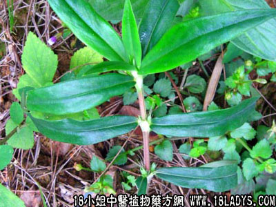

植物名：耳草。
生长环境：本品为一年生，近直立或平卧草本。喜生于旷地上或树林下，为广州常见的野生草本。
分布：我国云南、两广和海南均产之。
入药部分：全草。
采集期：夏、秋。
自采地点：山岗。
性味：性凉、味苦。
功能：解毒、止痒。
主治、用量和用法：1、皮肤生蛇：干用1至2两，煎水外洗患处；2、热毒痕痒：用法同上；3、蛇咬，配伍用。
验方1：（治蛇咬方）鲗鱼胆草1两、七星剑5钱、半边莲5钱、仙人对坐草5钱、田基黄5钱、大叶蛇总管5钱、清水四碗，煎成一碗服。
（方解）鲗鱼胆草、半边莲、田基黄、大叶蛇总管四种为清热解毒药；七星剑、仙人对坐草二种为祛风解毒药。合为祛风毒、清热毒之剂。用治蛇咬而困于风毒与热毒者甚效。
（方歌）鲗鱼胆草蛇咬倒，七星仙人对坐草，半莲总管田基草，解毒功能第一好。
验方2：（治皮肤生蛇方）鲗鱼胆草1两、毛麝香5钱、六耳苓5钱、秋苦瓜5钱、天芥菜5钱、银花叶5钱，清水煎洗患处。
（方解）本方以毛麝香、六耳苓祛风散毒；鲗鱼胆草、秋苦瓜、天芥菜、银花叶清热解毒，合为祛风、清热、解毒之剂，用于外洗，直接治疗患处，效果良好。
（方歌）皮肤湿毒胆草呈，毛麝苦瓜六耳苓，天芥菜求银花叶，煎水外洗毒能清。
参考资料：本品有大叶与细叶两种，大叶的味甜，细叶的味苦。入药用苦味为佳。